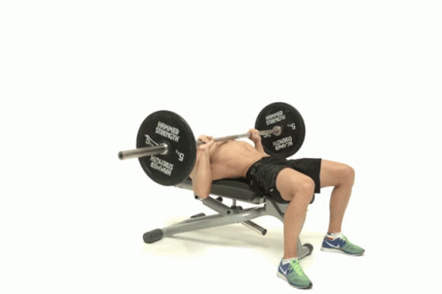
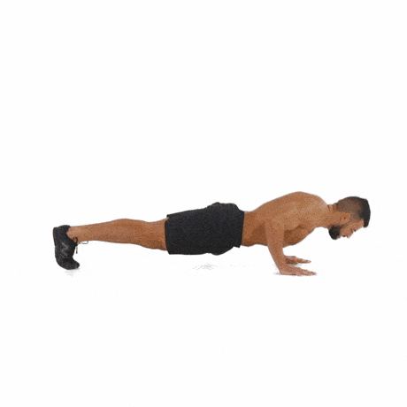
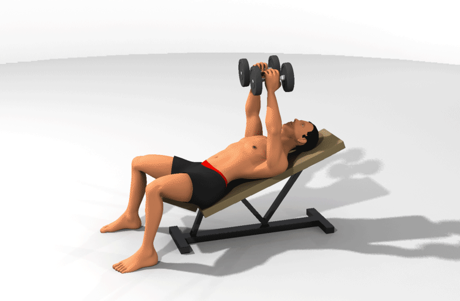

CHEST WORKOUT
Training your pectoral muscles will improve the strength in your back muscles and it can help you get stronger in movements that require pressing. It is good to keep these muscles strong to maintain good posture and for all your daily activities.
BRENCH PRESS (8 minutes)

- Perform 3 sets of bench press
- Set 1: 12 reps with a warm-up weight.
- Set 2: 10 reps with a slightly heavier weight.
- Set 3: 8 reps with a challenging weight.
- Rest for 60-90 seconds between sets.
- Focus on proper form, with a controlled descent and powerful push.
PUSH UP(7 minutes)

- Perform 3 sets of push-ups.
- Set 1: 15 reps (adjust difficulty as needed).
- Set 2: 12 reps.
- Set 3: 10 reps.
- Rest for 30-60 seconds between sets.
- Maintain a straight line from head to heels while doing push-ups.
DUMBBELL FLYES ( 6minutes)

- Perform 3 sets of dumbbell flyes.
- Set 1: 12 reps.
- Set 2: 10 reps
- Set 3: 8 reps.
- Rest for 60 seconds between sets.
- Focus on the stretch and squeeze of the chest muscles.
INCLINE BENCH PRESS ( 4 minutes)

- Perform 2 sets of incline bench press.
- Set 1: 10 reps.
- Set 2: 8 reps.
- Rest for 60 seconds between sets
- Adjust the bench to a 30-45 degree incline to target the upper chest.